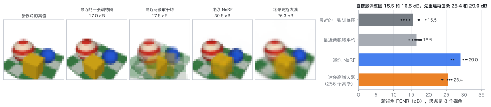
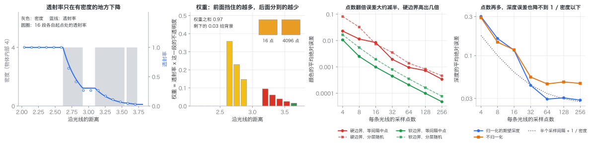
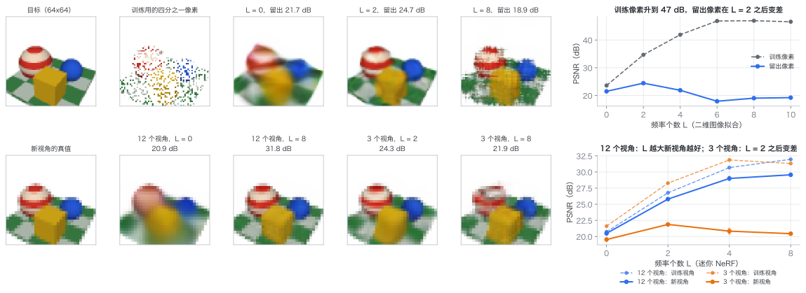
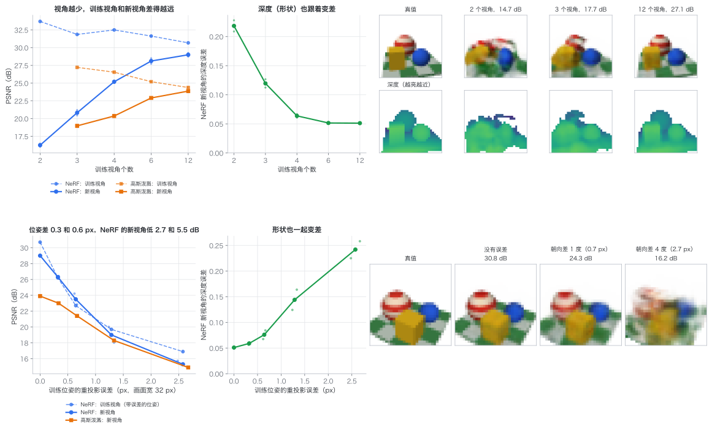
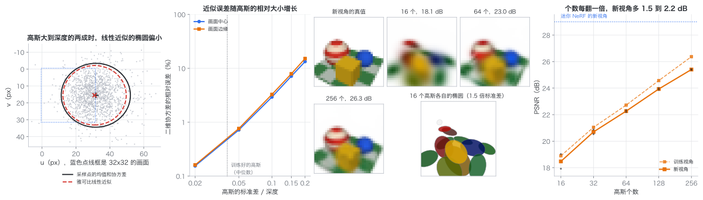
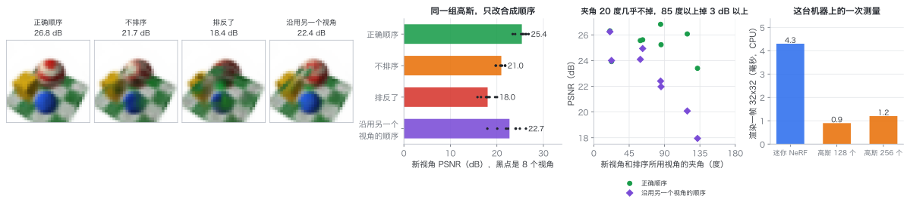

本章所有数字都来自代码生成的一个小场景（两个球、一个盒子、一块棋盘格底板）和 32×32 的图上的实测，记录在 figures/实测数字.json，由 solutions 分支的 solutions/figures/ch30.py 生成。体渲染权重、沿光线合成、位置编码、高斯投影和从前到后的合成用的是本章作业的参考实现。脚本在一台 Apple 芯片 Mac 的 CPU 上两到四分钟跑完，重复运行结果相同。迷你 NeRF 只有 10372 个参数，迷你高斯泼溅最多 256 个高斯，图只有 32×32，场景是漫反射的，相机位姿除了故意加误差的实验以外都是精确的；论文里的模型和真实照片和这些差得很远，结论只在所写的条件下成立，换成真实数据要自己再测。本章不引用任何公开基准上的成绩；第 9 节用真模型的部分没有在写课程的机器上运行过。
0. 本章怎么学
应用场景：从多视图重建三维、合成新视角，对应渲染和仿真方向。具体是三件事：用多张已知位姿的照片把一个器件或缺陷的三维形貌求出来；把真实的场景变成一个可以从任意角度渲染的模型，给仿真和数据生成用；在已有视角之间合成新的视角，扩充训练数据。第 21 章是“已知几何，渲染出图像”，这一章是反过来：只有图像和相机，把场景求出来。
优先级：P3，选修。分到渲染、仿真方向，或者项目里真要做多视角三维重建时再深入。前置是第 21 章（模型视图投影、光栅化、深度缓冲、OpenGL 和 OpenCV 两种相机约定）；相机模型的符号沿用第 7 章 7.1 节和第 17 章：OpenCV 约定，\(P_c = R\,P_w + t\)，相机看向 \(+Z\)，\(y\) 向下，\(u = f_x X_c / Z_c + c_x\)。
| 档位 | 累计用时 | 做什么 | 做到什么算完 |
|---|---|---|---|
| 速通 | 3 小时 | 读第 1 节、2.1 到 2.2 节、第 4 节、第 5 节、6.1 节、7.1 节、第 8 节，看懂图 1、2、4、5、6，把第 10 节演示的五步试一遍，答完 5 道小测 | 能讲清体渲染里权重是怎么来的、期望深度为什么要除以权重之和，视角太少和位姿不准各是什么症状，高斯泼溅为什么比 NeRF 渲染快，这类方法为什么在半导体光学检测里用得不多 |
| 标准 | 10 小时 | 读完全章（第 9 节只读不跑），跑 Notebook，完成作业并验收通过，做第 13 节前三个破坏实验，填实验记录 | 五项测试 PASS，实验记录里有视角数量和位姿误差两组结果（训练视角和新视角的 PSNR、深度误差）和一个失败案例 |
| 深挖 | 16 小时 | 再做其余破坏实验，按第 9 节在自己的显卡上用 COLMAP 和 nerfstudio（或 gsplat）重建一个真实的小物体，做第 14 节的扩展（选一个） | 能给出带条件的结果：几张照片、什么分辨率、位姿从哪里来、重投影误差多少、留出视角的 PSNR 多少，并且用一个已知尺寸的东西核对过重建的尺寸 |
用时超过所选档位的 1.5 倍还没做完，就把卡点写进 学习进度.md，先往下一章走。标准档不需要安装任何东西。深挖档要装 COLMAP 和 nerfstudio，在 Windows 上编译和环境问题最容易卡住，卡超过一小时就先回到 Notebook 的小模型把结论做完。
1. 为什么需要：从几张照片看一个没拍过的角度
先看问题本身。场景是代码生成的：一个红白条纹的球（半径 0.45）、一个蓝球（半径 0.30）、一个黄色的盒子和一块 2×2 的棋盘格底板，表面是漫反射。12 台相机在离原点 3.2 的球面上看向原点，方位角均匀分布，仰角 25 度和 40 度交替，每台拍一张 32×32 的图。另外 8 台相机放在训练视角之间，方位角相差 45 度，仰角在 18、32、48 度之间轮换，它们的图不参与训练，只用来检验。新视角和最近的训练视角之间的夹角（从原点看两台相机）在 9.6 到 22.5 度之间，平均 14.9 度。
任务是：只给 12 张训练图和它们的相机，画出 8 个新视角的图。比较四种做法：
- 最近的一张训练图：找相机位置最接近的那张训练图，直接拿来当新视角的图。
- 最近两张取平均：最接近的两张训练图的平均。
- 迷你 NeRF：先从 12 张图里重建一个密度场和颜色场，再用体渲染画出新视角（第 2 到 4 节）。
- 迷你高斯泼溅：先用 256 个三维高斯拟合 12 张图，再用光栅化画出新视角（第 6 节）。
图像质量用峰值信噪比（PSNR）衡量：\(\mathrm{PSNR} = -10 \log_{10} \mathrm{MSE}\)，颜色范围 0 到 1，MSE 对一张图的全部像素和三个通道取平均，再对 8 个视角的 PSNR 取平均。PSNR 每高 10 dB，均方误差小到十分之一。

| 做法（12 个训练视角，8 个新视角，32×32） | 新视角 PSNR 平均（dB） | 最低的一个视角 | 最高的一个视角 |
|---|---|---|---|
| 最近的一张训练图 | 15.5 | 12.2 | 19.2 |
| 最近两张训练图取平均 | 16.5 | 14.4 | 17.8 |
| 迷你 NeRF（2 个种子的平均） | 29.0 | 26.4 | 30.8 |
| 迷你高斯泼溅，256 个高斯（2 个种子的平均） | 25.4 | 23.7 | 26.6 |
- 视角差十几度，直接搬图就不行了。最近的一张训练图只有 15.5 dB：物体在画面里的位置和遮挡关系都变了。两张取平均也只有 16.5 dB，图 1 第三栏是两个错位的场景叠在一起。
- 先重建三维再渲染，高出一大截。迷你 NeRF 比最近的一张训练图高 13.5 dB，迷你高斯泼溅比最近两张取平均高 8.9 dB。它们在训练视角上的 PSNR 分别是 30.7 和 26.4 dB，新视角只低了一两个分贝：学到的东西在没见过的角度上也成立。
- 这一组设置下迷你 NeRF 比迷你高斯泼溅高。这和公开文献里常见的印象不一致，原因要分开看：本章的高斯泼溅个数固定、没有增删高斯的步骤（原论文的关键设计之一），256 个高斯只有 3584 个参数，而迷你 NeRF 有 10372 个；两种方法都没有训练到头（7.3 节）。这里不比哪种方法更好，只用它们说明机制。
这两种方法要解决的核心问题是同一个：怎样把“三维场景”写成一个可以求导的渲染过程，让渲染出来的图和照片比较，再用梯度下降去改场景。第 21 章的三角形光栅化做不到这一点：像素要么被三角形盖住、要么没有，三角形挪一点点，像素值要么不变、要么突变，没有有用的梯度。NeRF 的答案是把场景写成连续的密度和颜色，沿光线积分（体渲染，第 2 节）；高斯泼溅的答案是把场景写成一堆半透明的、边缘模糊的高斯，投到屏幕上按顺序混合（第 6 节）。
2. 体渲染：沿光线积分
2.1 从密度到权重
把场景看成一团介质：空间里每个点 \(\mathbf{x}\) 有一个体密度 \(\sigma(\mathbf{x}) \ge 0\)，表示光在这里每走单位长度被吸收（或者挡住）的比例；还有一个颜色 \(\mathbf{c}(\mathbf{x})\)。从相机出发的一条光线 \(\mathbf{r}(s) = \mathbf{o} + s\,\mathbf{d}\)，看到的颜色是
\(T(s)\) 叫透射率：光从相机走到 \(s\) 处，一路上没有被挡住的比例。\(T\sigma\,\mathrm{d}s\) 是“光正好在 \(s\) 附近那一小段被挡住”的概率，所以颜色是各处颜色按这个概率加权的和。这个公式来自体渲染的光学模型（Max，1995），NeRF（Mildenhall 等，2020）直接用了它。
积分没法直接算，NeRF 的做法是在光线上取 \(N\) 个采样点 \(s_1 < s_2 < \cdots < s_N\)，第 \(i\) 段的长度是 \(\delta_i = s_{i+1} - s_i\)，假设每段里的密度和颜色是常数。那么：
三步各有意思：
- \(\alpha_i\) 是第 \(i\) 段的不透明度：光进了这一段，有多大比例出不来。密度乘长度（叫光学厚度）越大，越接近 1。
- \(T_i\) 是到达第 \(i\) 段之前的透射率，只乘前面各段，不含自己。
- \(w_i\) 是第 \(i\) 个采样点的权重：光走到这里、并且在这里被挡住的比例。所有权重之和 \(\sum w_i = 1 - T_{N+1}\) 叫累积不透明度，剩下的 \(T_{N+1}\) 是穿过整条光线、到达背景的光。有背景色 \(\mathbf{c}_{bg}\) 时，最终颜色再加上 \((1 - \sum w_i)\,\mathbf{c}_{bg}\)。
一个可以手算的例子：连续三段的光学厚度都是 \(\ln 2 = 0.693\)，每段的不透明度都是 0.5，权重依次是 0.5、0.25、0.125，三段之后剩下的透射率是 0.125。每一段挡掉剩下的光的一半。
这是作业的前两个函数 volume_weights 和 composite_rays。有两个性质可以用来自查：权重之和等于 \(1 - \exp(-\sum \sigma_i \delta_i)\)；把每一段平分成密度相同的两小段，两小段的权重之和等于原来那一段的权重。
看一条真实的光线。新视角 0 里第 21 行第 12 列的像素，光线依次穿过黄色盒子、条纹球和底板。把三个物体内部的密度都设成 4（半透明），外部是 0，在光线穿过场景包围盒的那一段（距离 2.04 到 3.81）上取 16 个等间隔的中点，每段长 0.111，一段里有物体时它的不透明度是 0.358。

| 这条光线（密度 4，16 个采样点） | 数值 |
|---|---|
| 落在盒子、条纹球、底板里的采样点个数 | 3、4、1 |
| 盒子、条纹球、底板各自分到的权重 | 0.735、0.22、0.016 |
| 留给背景的权重 | 0.029 |
| 穿出盒子时的透射率（精确） | 0.305 |
| 期望深度比第一个表面远：16 个 / 4096 个采样点 | 0.26 / 0.28 |
盒子在最前面，3 个采样点就拿走了 0.735 的权重；条纹球有 4 个采样点，只分到 0.22，因为光穿出盒子时只剩 0.305；底板最后，只有 0.016。谁在前面谁说了算，不需要任何专门的遮挡判断，透射率乘下来自然就是这样。把密度调大，前面的物体拿走的就更多，最后和第 21 章的深度缓冲一样，只有最近的表面有颜色（第 10 节演示第 2 步）。
B。每段的不透明度是 \(1 - e^{-\ln 2} = 0.5\)。第一段的权重是 0.5；到第二段之前只剩一半的光，权重 0.25；到第三段之前剩 0.25，权重 0.125。三段之后剩下的透射率也是 0.125，留给背景。A 忘了透射率，C 把权重当成了要归一化的东西。作业的验收用的就是这个性质：权重之和是 \(1 - \exp(-\sum\sigma_i\delta_i)\)，不是 1。
2.2 深度从同一组权重里来
颜色是“各采样点的颜色按权重求和”，深度用同一组权重对距离求和就行。有一处细节：要除以权重之和。
不除的话，一条只挡住一半光的光线，深度会被另一半“到达背景、距离按 0 算”的权重拉向 0。这就是作业 composite_rays 要求除以权重之和、并且在权重全为 0 时返回 0 的原因。
期望深度不是第一个表面的位置，而是按权重平均出来的位置。上面那条光线，第一个表面（盒子）在 2.617 处，期望深度却在后面 0.26（4096 个采样点时是 0.28）：盒子是半透明的，后面的条纹球也分到了一部分权重。物体边缘的像素是同样的情况，光线擦过物体的边、只被挡住一部分，后面的背景或者别的物体也占了权重。第 10 节演示的第 4 步里，一条光线上有两层介质，期望深度落在两层之间什么都没有的空隙里。拿 NeRF 的深度图去量三维形貌时，边缘和半透明的地方都要小心。
在训练好的迷你 NeRF 上量一下除和不除的差别（12 个视角，8 个新视角，打到物体的像素）：除以权重之和时深度误差 0.05，不除时 0.088。差别集中在累积不透明度在 0.05 到 0.95 之间的“半透明像素”上，它们只占物体像素的 5.7%，误差却从 0.05 变成 0.64。
2.3 采样点数和误差
把三个物体的密度都提到 40（基本不透明，光走 0.025 透射率就降到 1/e），用体渲染画整张新视角，和每条光线 4096 个采样点的结果比。光线在场景包围盒里的平均长度是 1.21。
| 每条光线的采样点数（密度 40，32×32，和 4096 个采样点比） | 4 | 8 | 16 | 32 | 64 | 128 | 256 |
|---|---|---|---|---|---|---|---|
| 硬边界，等间隔中点：颜色的平均绝对误差 | 0.023 | 0.011 | 0.0084 | 0.0019 | 0.00095 | 0.00072 | 0.00034 |
| 硬边界，分层随机 | 0.082 | 0.032 | 0.0073 | 0.0035 | 0.0014 | 0.00082 | 0.00046 |
| 软边界，等间隔中点 | 0.011 | 0.0025 | 0.00098 | 0.00044 | 0.00021 | 9.9e-05 | 4.7e-05 |
| 软边界，分层随机 | 0.017 | 0.0054 | 0.0019 | 0.0008 | 0.00035 | 0.00016 | 7.7e-05 |
“硬边界”是密度在物体表面从 0 直接跳到 40；“软边界”是按到表面的距离用 sigmoid 平滑过渡，过渡宽度 0.06。“分层随机”是把光线分成 \(N\) 段、每段里随机取一点（NeRF 训练时就是这样做的），表里是 4 次的平均。
- 采样点数翻倍，误差大约减半。16 到 256 之间按对数坐标拟合，四条线每翻一倍误差缩小的倍数是 2.01 到 2.24。
- 硬边界的误差是软边界的几倍。同样的采样点数下，硬边界（等间隔中点）是软边界的 2.2 到 8.5 倍，而且曲线不平滑：16 个点时误差几乎没比 8 个点小（0.0084 对 0.011），到 32 个点一下降到 0.0019。表面落在采样点之间哪个位置，对硬边界影响很大。
- 分层随机单次的误差多数时候比等间隔中点大（硬边界 4 个和 8 个点时是 3.6 和 2.8 倍，32 个点以上是 1.1 到 1.8 倍，16 个点时反而略小，0.9 倍），但它的误差在不同次之间是随机的，不会每次都在同一个地方错。训练时每一步都重新抽样，网络就不会把“采样点刚好跳过的那一段”当成空的（第 10 节演示第 3 步）。不过在本章的设置下，训练时用固定的中点还是分层随机，训练出来的迷你 NeRF 在新视角上几乎没有差别：固定中点 29.1 到 29.2 dB，分层随机 29.0 dB（2 个种子，渲染时取 20 到 96 个点）。这个场景的物体比采样间隔大得多，抖动的好处显不出来。
2.4 深度的误差降不到零
同一组实验看深度（硬边界，和光线求交的真值比，打到物体的像素）：
| 每条光线的采样点数 | 4 | 8 | 16 | 32 | 64 | 128 | 256 |
|---|---|---|---|---|---|---|---|
| 期望深度（除以权重之和）：平均绝对误差 | 0.3 | 0.162 | 0.116 | 0.043 | 0.029 | 0.031 | 0.029 |
| 其中的系统偏差（估计比真值远多少） | 0.165 | 0.116 | 0.067 | 0.037 | 0.03 | 0.031 | 0.029 |
| 半个采样间隔 + 1 / 密度 | 0.176 | 0.1 | 0.063 | 0.044 | 0.034 | 0.03 | 0.027 |
- 采样点多了以后，深度误差停在 0.03 左右，不再下降。它几乎全是系统偏差：估计的深度总比表面远。原因在 2.2 节：光进入物体之后还要走一段才被挡住，密度 40 时这段距离的期望是 1/40 = 0.025，期望深度就落在表面后面这么远。密度有限的场景，期望深度天生偏向表面里面。
- 采样点少的时候，误差跟着半个采样间隔走。第一个落进物体的采样点离表面平均有半个间隔，图 2 右一的点线是“半个采样间隔加 1 / 密度”，和实测曲线大体重合。
- 期望深度除不除以权重之和，在不透明的像素上差别不大，在半透明的像素上差别很大：64 个采样点时，半透明像素上除以权重之和的误差是 0.01，不除是 0.84。
所以 NeRF 的深度图在不透明、采样足够密的地方是可信的，但它是一个“权重的重心”，不是表面的位置。真要拿来做量测，至少要知道密度场在表面附近有多陡（第 8 节）。
3. 位置编码：网络为什么学不出细节
3.1 频谱偏置
NeRF 的场景是一个小网络：输入坐标 \((x, y, z)\)，输出密度和颜色。直接把坐标喂给全连接网络，它倾向于先学低频、很难学出高频的细节，这叫频谱偏置（spectral bias）。NeRF 的办法是先把每个坐标映射成一组不同频率的正弦和余弦，再交给网络：
对 \(x\)、\(y\)、\(z\) 三个坐标各做一次。\(L\) 是频率的个数，相邻两个频率差 2 倍。3 维坐标、\(L = 4\) 时输入是 27 维，\(L = 10\) 时是 63 维。NeRF 论文对位置取 \(L = 10\)，对视角方向取 \(L = 4\)（以论文为准）。为什么这样有用，Tancik 等人 2020 年的论文 Fourier Features Let Networks Learn High Frequency Functions in Low Dimensional Domains 做了分析。这是作业的 positional_encoding。
第 25 章第 4 节的正弦位置编码和这里长得很像，用途不同：那里是给离散的块编号，告诉 Transformer 每个块在哪；这里是对连续的坐标做变换，让全连接网络能表示高频。
先在二维上看最直接的效果。把新视角 0 渲染成 64×64 的图，用一个 3 层宽 64 的全连接网络从像素坐标（归一化到 -1 到 1）回归颜色，只拿随机抽出的四分之一像素训练（1028 个），其余像素留出，训练 500 步，2 个种子。

| 频率个数 L（二维图像拟合，64×64，四分之一像素训练，2 个种子） | 0 | 2 | 4 | 6 | 8 | 10 |
|---|---|---|---|---|---|---|
| 训练像素上的 PSNR（dB） | 23.6 | 34.7 | 41.9 | 46.8 | 46.9 | 46.6 |
| 留出像素上的 PSNR（dB） | 21.5 | 24.5 | 21.9 | 17.9 | 19.0 | 19.2 |
- 不做位置编码时连训练像素都拟合不好（23.6 dB），图 3 上排第三栏是一团模糊，条纹和棋盘格都没有出来。这就是频谱偏置。
- 频率多了，训练像素越拟合越好，L = 6 以上都在 46.6 到 46.9 dB，网络几乎把每个训练像素都记住了。
- 留出像素在 L = 2 时最好（24.5 dB），之后反而变差，L = 6 时只有 17.9 dB，比不做编码还低。图 3 上排最后一栏（L = 8）是满屏的噪点：训练像素之间平均相隔 2 个像素，在归一化坐标里是 0.063，而 L = 8 时最高频率的周期是 0.016，比训练像素的间距小得多。网络可以在训练像素之间随意振荡，训练集上看不出来，留出的像素就遭殃了。
3.2 在 NeRF 上：视角多时频率是帮助，视角少时是隐患
同样的现象在迷你 NeRF 里也有，但是要看训练视角够不够密。迷你 NeRF 只改 L，训练视角取 12 个和 3 个，各 2 个种子：
| 频率个数 L（迷你 NeRF，8 个新视角，2 个种子） | 0 | 2 | 4 | 8 |
|---|---|---|---|---|
| 12 个训练视角：训练视角 PSNR（dB） | 20.7 | 26.8 | 30.7 | 32.0 |
| 12 个训练视角：新视角 PSNR（dB） | 20.5 | 25.8 | 29.0 | 29.6 |
| 12 个训练视角：新视角的深度误差 | 0.102 | 0.063 | 0.051 | 0.051 |
| 3 个训练视角：训练视角 PSNR（dB） | 21.6 | 28.3 | 31.9 | 31.3 |
| 3 个训练视角：新视角 PSNR（dB） | 19.5 | 21.9 | 20.8 | 20.4 |
| 3 个训练视角：新视角的深度误差 | 0.111 | 0.083 | 0.12 | 0.132 |
- 12 个视角时，频率越多越好，L 从 0 加到 4，新视角从 20.5 dB 涨到 29.0 dB，加到 8 还有一点涨（29.6 dB），图 3 下排第二栏和第三栏的差别一眼可见。这时每个空间点都被好几个视角看到，网络没法在视角之间乱来。
- 3 个视角时，L = 2 最好（新视角 21.9 dB），L = 4 和 8 训练视角更高、新视角却更低，深度误差也从 0.083 变成 0.12 和 0.132。图 3 下排最后一栏（3 个视角，L = 8）的条纹球上有不属于它的碎纹。这和二维拟合是同一个道理：观测稀疏的时候，高频是用来记住训练数据的，不是用来描述场景的。
- 本章的迷你 NeRF 默认取 L = 4，在 12 个视角下已经接近饱和。场景里最细的东西是周期 0.3 的条纹，L = 4 时最高频率的周期是 0.375（坐标先除以 1.5），量级相当。
后来的方法有很多办法缓解这个矛盾，比如训练时先只开低频、逐渐放开高频，或者用多分辨率的哈希网格代替正弦编码（Instant-NGP，Müller 等，2022），这里不展开。
B。实测新视角从 21.9 dB 降到 20.4 dB，深度误差从 0.083 变成 0.132。视角稀疏时，多出来的高频被用来在训练视角之间随意填空，训练视角拟合得更好，新视角反而更差。同样的改动在 12 个视角时是有益的（25.8 到 29.6 dB）。A 是视角足够多时的情况；二维图像拟合上 L 从 2 加到 8，留出像素也从 24.5 dB 掉到 19.0 dB。
4. 把零件接起来：迷你 NeRF
4.1 训练一个场景
迷你 NeRF 就是把上面三样东西串起来：
训练图的一个像素 → 由相机的 K、R、t 算出过这个像素的光线（起点是相机中心，方向是 R^T K^-1 (u, v, 1)）
→ 光线和场景包围盒求交，只在里面那一段分层采样 20 个点
→ 每个点的坐标做位置编码（L = 4，27 维）
→ 3 层宽 64 的全连接网络 → 密度（softplus）和颜色（sigmoid）
→ volume_weights、composite_rays → 这个像素的颜色
损失 → 和训练图的像素比均方误差
每一步随机取 512 条光线（来自 12 张训练图的全部 12288 个像素），Adam，学习率 0.01 按指数降到十分之一，训练 1000 步。在一台 Mac 的 CPU 上实测一次是 2.6 秒左右。整个过程没有任何三维的监督：网络从来没见过深度，深度是它为了同时解释 12 张图自己“找”出来的。
和论文的设置比，本章的迷你版小了很多：论文的网络是 8 层宽 256，位置之外还输入视角方向（让颜色可以随视角变化，表示高光），采样分粗细两级（64 加 128 个点，以论文为准）。本章的场景是漫反射的，颜色不随视角变，所以没输入方向；采样只在包围盒里做，20 个点就够。
4.2 光线从哪里来：相机约定
这一步最容易错，而且错了不报错。本章沿用第 7、17 章的 OpenCV 约定：\(P_c = R\,P_w + t\)，相机看向 \(+Z\)，\(y\) 向下。过像素 \((u, v)\) 的光线，在相机坐标里的方向是 \(((u - c_x)/f_x,\ (v - c_y)/f_y,\ 1)\)，转到世界坐标要乘 \(R^T\)；起点是相机中心 \(-R^T t\)（第 7 章 7.1 节说过，\(t\) 不是相机的位置）。
NeRF 的原始代码和很多数据集用的是 OpenGL 的约定（看向 \(-Z\)，\(y\) 向上），COLMAP 输出的是 OpenCV 约定，nerfstudio 内部又有自己的约定。两种约定之间就是第 21 章第 3 节的那个 \(F = \mathrm{diag}(1, -1, -1, 1)\)。不转换的症状和第 21 章图 4 一样，只是在这里更隐蔽：训练不会报错，只是怎么也收敛不好，或者重建出一个上下颠倒、前后翻转的场景。拿到一份新数据时，先用它的位姿把一个已知的点（比如场景中心）投影回几张图，看是不是落在对的位置上。
5. 视角数量和相机位姿
5.1 视角太少：训练视角很好，新视角很差
只改训练视角的个数，其余同上（2 个种子）：

| 训练视角个数（迷你 NeRF，8 个新视角，2 个种子） | 2 | 3 | 4 | 6 | 12 |
|---|---|---|---|---|---|
| 训练视角 PSNR（dB） | 33.7 | 31.9 | 32.5 | 31.6 | 30.7 |
| 新视角 PSNR（dB） | 16.3 | 20.8 | 25.2 | 28.1 | 29.0 |
| 两者之差（dB） | 17.4 | 11.0 | 7.3 | 3.5 | 1.7 |
| 新视角的深度误差 | 0.218 | 0.12 | 0.064 | 0.052 | 0.051 |
| 深度误差相对相机距离 | 6.8% | 3.7% | 2.0% | 1.6% | 1.6% |
- 视角越少，训练视角的 PSNR 越高。2 个视角时是 33.7 dB，比 12 个视角时还高 3 dB：要解释的图少，网络更容易全部记住。如果只看训练集上的指标，会以为 2 个视角的模型最好。
- 新视角在 2 个视角时只有 16.3 dB，和第 1 节“直接搬训练图”差不多。两个指标差了 17.4 dB。图 4 右上方位角 77 度的那个新视角（2 个训练视角在 10 度和 190 度，离它都远），2 个视角时是 14.7 dB，深度图上盒子和球的形状都不对。
- 深度一起变差。2 个视角时新视角的深度误差是 0.218，是 12 个视角时的 4 倍多。这就是形状和外观的歧义：只从一两个方向看，一个“形状错了、但颜色刚好画对了”的场景也能完美解释训练图。网络会把颜色涂在错误的深度上，从训练视角看毫无破绽，换个角度就露馅。
- 4 到 6 个视角之后改善变慢。从 6 个到 12 个，新视角只从 28.1 dB 涨到 29.0 dB。这个数和场景有关：这里的场景简单、遮挡少、没有镜面，真实场景需要的视角要多得多。
- 高斯泼溅也是同一个规律：3 个视角时训练视角 27.2 dB、新视角 19.0 dB，12 个视角时 24.4 和 23.9 dB。
所以报告新视角合成的结果时，一定要用留出的视角；有深度真值（或者别的三维测量）时，把深度也比一下，它比 PSNR 更直接地反映形状对不对。
B。实测 2 个视角时训练视角是 33.7 dB，12 个视角时是 30.7 dB：要解释的图越少，网络越容易全部记住。但 2 个视角的模型在新视角上只有 16.3 dB（12 个视角时 29.0 dB），深度误差 0.218（0.051）。训练集上的指标不能说明重建得好不好，要看留出的视角，最好再看深度。
5.2 相机位姿有误差
NeRF 和高斯泼溅都假设相机位姿是精确的。真实数据里位姿来自 COLMAP 这样的运动恢复结构（第 9.2 节）或者机械平台，都有误差。实际使用里，位姿不准是最常见的失败原因之一。
实验（图 4 下半）：12 张训练图不变，只把拿去训练的每个相机的朝向绕一根随机的轴转一个固定的角度，相机中心不动。新视角用真的位姿渲染。为了能和第 17 章的标定结果对照，误差也换算成重投影误差：把每个训练视角里看得见的表面点，分别用真位姿和带误差的位姿投影，像素距离的均方根。图只有 32 像素宽。
| 朝向误差（12 个训练视角，2 个种子） | 0 | 0.5 度 | 1 度 | 2 度 | 4 度 |
|---|---|---|---|---|---|
| 重投影误差（px，画面宽 32） | 0 | 0.32 | 0.64 | 1.29 | 2.58 |
| 迷你 NeRF：新视角 PSNR（dB） | 29.0 | 26.3 | 23.5 | 19.0 | 15.3 |
| 比没有误差时低（dB） | 0 | 2.7 | 5.5 | 10.0 | 13.7 |
| 迷你 NeRF：新视角的深度误差 | 0.051 | 0.059 | 0.076 | 0.144 | 0.242 |
| 高斯泼溅（128 个，1 个种子）：比没有误差时低（dB） | 0 | 0.9 | 2.5 | 5.5 | 9.0 |
- 不到一个像素的位姿误差，新视角就掉了好几分贝。重投影误差 0.32 px 时迷你 NeRF 掉 2.7 dB，0.64 px 时掉 5.5 dB。这个“不到一个像素”在第 17 章里算是标定得不错的水平（那一章说好的标定通常在 0.1 到 0.5 px）。
- 训练视角的 PSNR 也一起掉（30.7 dB 降到 26.2、22.7 dB）。各视角的位姿互相矛盾时，没有一个场景能同时解释所有的图，网络只能折中成一个模糊的版本，图 4 右下最后一栏是朝向差 4 度时的样子。
- 形状也变差。朝向差 2 度时深度误差是没有误差时的近 3 倍（0.144 对 0.051）。
- 高斯泼溅掉得少一些（同样 1 度掉 2.5 dB），但它没有误差时本来就低（23.9 dB 对 29.0 dB），最后在 4 度时两者都到了 15 dB 左右。为什么掉得少，本章没有单独验证；一种可能是它的上限本来就被高斯个数卡住了，位姿带来的模糊相对没那么显眼。
像素误差和角度误差的换算：朝向偏 1 度，画面中心的像移是 \(f_x \tan 1^\circ\)，本章 \(f_x = 44\) 时是 0.768 px。视场角不变、画面宽 1000 px 时，同样 1 度就是 24.0 px。高分辨率的图对位姿的要求更苛刻：要把重投影误差压到零点几个像素，角度要准到百分之一度的量级。
所有相机共有的误差是另一回事。把训练和渲染时用的焦距都当成真值的 1.1 倍（位姿不动），新视角只低了 0.6 dB（29.3 对 28.6 dB，1 个种子），训练视角几乎不变（30.9 对 30.8 dB），但是重建出来的场景整体缩小了：和焦距正确时比，大小是 0.915 倍，接近焦距比例的倒数 0.909。焦距偏大，网络就把场景放得更近、更小，各张图之间仍然自洽，所以 PSNR 看不出来。这和第 17 章“重投影误差小，不代表参数准”是同一件事。要用重建结果量尺寸，必须在场景里放一个已知尺寸的东西核对。
B。实测从 29.0 dB 掉到 23.5 dB，低了 5.5 dB；0.32 px 时就低了 2.7 dB。各视角的位姿互相矛盾，网络只能折中成一个模糊的场景，训练视角自己的 PSNR 也一起掉。所有相机共有的焦距误差则相反：焦距差 10%，PSNR 只掉 0.6 dB，场景却整体缩小到 0.915 倍。前者看 PSNR 能发现，后者只能靠已知尺寸核对。
6. 3D Gaussian Splatting
6.1 用一堆高斯表示场景
3D Gaussian Splatting 出自 Kerbl 等人 2023 年的论文 3D Gaussian Splatting for Real-Time Radiance Field Rendering。它不用网络，直接把场景写成一组三维高斯，每个高斯有：
- 中心 \(\boldsymbol{\mu}\)（3 个数）；
- 协方差 \(\Sigma\)，决定椭球的大小和朝向。直接优化一个 3×3 矩阵很难保证它是半正定的，所以写成 \(\Sigma = R S S^T R^T\)，\(S\) 是三个轴长组成的对角阵（存对数），\(R\) 由一个四元数给出（4 个数）；
- 不透明度 \(o\)（1 个数，过 sigmoid）；
- 颜色。本章是一个和视角无关的颜色（3 个数）；论文用球谐函数表示随视角变化的颜色，最高 3 阶（以论文为准）。
本章每个高斯 14 个数。渲染一帧分三步，后两步是作业的 project_gaussians 和 composite_gaussians：
- 投影：中心按针孔模型投到屏幕上；协方差先变到相机坐标系，\(\Sigma_c = R\,\Sigma\,R^T\)（这里的 \(R\) 是相机外参），再用透视投影在中心处的雅可比 \(J\) 变成二维：\(\Sigma' = J\,\Sigma_c\,J^T\)。
- 算每个像素上的不透明度：第 \(k\) 个高斯在像素 \(\mathbf{p}\) 上的不透明度是 \(\alpha_k(\mathbf{p}) = o_k \exp\!\big(-\tfrac{1}{2}(\mathbf{p} - \mathbf{u}_k)^T \Sigma_k'^{-1} (\mathbf{p} - \mathbf{u}_k)\big)\)。
- 按深度排序，从前到后合成：和体渲染一样，\(C = \sum_k T_k\,\alpha_k\,\mathbf{c}_k\)，\(T_k = \prod_{j<k}(1 - \alpha_j)\)，只是“沿光线的采样点”换成了“按深度排好序的高斯”。
透视投影 \(u = f_x X/Z + c_x\)、\(v = f_y Y/Z + c_y\) 的雅可比是
第三列来自除以 \(Z\)：高斯沿视线方向的伸展，在偏离光轴的地方会投成屏幕上的一个分量。在光轴上 \(X = Y = 0\)，第三列是 0，视线方向的方差不影响投影的大小。这一列最容易漏，漏了之后光轴附近完全正常，只有偏离光轴、并且高斯沿视线方向拉长时才出错，作业的验收专门用了这种例子。
两个工程细节，作业里都有对应：
- 二维协方差的对角线要加一个小常数（本章和官方实现都取 0.3 像素平方，以官方实现为准），保证每个高斯至少有一个像素那么大，不然很小的高斯会落在像素中心之间、谁也看不见。这一步在调用方做，
project_gaussians本身不加。 - 不透明度有上限（官方实现是 0.99）。一个高斯把光完全挡死时，它后面所有高斯的权重都是 0，收不到梯度，训练就卡住了。
6.2 雅可比近似的误差
\(\Sigma' = J \Sigma_c J^T\) 是一个线性近似：透视投影不是线性的，一个三维高斯投出来严格说不是二维高斯。这个近似来自 EWA Splatting（Zwicker 等，2002）。它差多少，取决于高斯相对它离相机的距离有多大。拿一个各向同性的三维高斯放在深度 3.2 处，用 200 万个采样点逐个做透视投影、统计它们的协方差，和线性近似比：

| 标准差 / 深度（各向同性的高斯，200 万个采样点） | 0.02 | 0.05 | 0.1 | 0.15 | 0.2 |
|---|---|---|---|---|---|
| 画面中心：协方差的相对误差 | 0.2% | 0.7% | 2.9% | 7.1% | 13.3% |
| 画面边缘：协方差的相对误差 | 0.2% | 0.8% | 3.3% | 7.9% | 15.2% |
| 画面边缘：中心偏移（px） | 0.01 | 0.04 | 0.16 | 0.37 | 0.72 |
高斯的大小在深度的十分之一以内时，误差是百分之几以下；到了五分之一，误差 15.2%，线性近似给出的水平标准差比真实的小 9%，投影的中心也偏了 0.72 px（图 5 左）。训练好的 128 个高斯里，“最长轴 / 深度”的中位数是 0.039，最大 0.135，大多数落在误差很小的区间。比值 0.02 那一列的 0.2% 已经接近采样本身的统计误差。
6.3 高斯个数和质量
本章的迷你版没有原论文的“增密和剪枝”：原论文在训练中按梯度把一些高斯一分为二或者复制一份，把不透明度太低的删掉，个数从 COLMAP 给出的稀疏点云开始，最后可以长到几十万到几百万个（具体数量以论文和实际训练为准）。这里个数固定、中心在场景范围内随机初始化，只改个数：
| 高斯个数（12 个训练视角，800 步，2 个种子） | 16 | 32 | 64 | 128 | 256 |
|---|---|---|---|---|---|
| 参数个数 | 224 | 448 | 896 | 1792 | 3584 |
| 训练视角 PSNR（dB） | 18.9 | 21.0 | 22.7 | 24.6 | 26.4 |
| 新视角 PSNR（dB） | 18.5 | 20.7 | 22.3 | 23.9 | 25.4 |
个数每翻一倍，新视角多 1.5 到 2.2 dB，到 256 个还没饱和。训练视角和新视角只差 0.3 到 1.0 dB：在 12 个视角下，高斯泼溅的限制是表达能力（个数），不是过拟合。图 5 中右的 16 个高斯，每一个都是一个模糊的色块，盒子和两个球各占了几个，底板用几个大的扁椭圆铺满。
和迷你 NeRF 比，同样的场景、同样的 12 个视角，迷你 NeRF（10372 个参数）新视角是 29.0 dB，256 个高斯是 25.4 dB。两种方法训练步数加倍都还会涨：迷你 NeRF 从 1000 步到 2000 步是 29.3 到 30.4 dB，128 个高斯从 800 步到 1600 步是 23.9 到 25.3 dB（种子 0）。本章的数都是固定预算下的结果，不能用来比较两种方法的上限。
6.4 排序
从前到后合成的前提是顺序对。同一组训练好的 256 个高斯，渲染 8 个新视角时只改合成的顺序：

| 合成顺序（256 个高斯，8 个新视角） | 新视角 PSNR（dB） | 比正确顺序低（dB） | 变了颜色的像素 |
|---|---|---|---|
| 按深度从近到远（正确） | 25.4 | 0 | 0 |
| 不排序（按存储顺序） | 21.0 | 4.4 | 25.0% |
| 排反了（从远到近） | 18.0 | 7.4 | 34.3% |
| 沿用另一个视角的顺序 | 22.7 | 2.7 | 16.9% |
“变了颜色”指和正确顺序相比，某个通道相差超过 0.05 的像素。
- 排反了最糟，远处的高斯盖在近处的上面，图 6 第三栏里蓝球蒙上了一层底板的绿色。
- 沿用另一个视角的顺序，坏处随视角差变大。新视角和排序用的那个视角只差 20 度左右时几乎没有影响（差 0.1 dB 和 -0.1 dB），差 85 度以上时低 3 到 6 dB。相机一动顺序就得重排，这是高斯泼溅每一帧都要做的事，好在排序很便宜。
- 训练时也不排序，不能把问题“学掉”。训练和渲染都一直不排序，新视角是 22.2 dB，比正确排序训练的 23.9 dB 低（128 个高斯，种子 0）。不排序训练出来的高斯，渲染时再改成按深度排序，是 22.6 dB：它学到的东西依赖于那个错误的顺序，换回正确顺序也不对了。
B。实测和那个视角夹角 20.5 度、22.5 度的两个新视角，PSNR 只差 0.1 和 -0.1 dB；夹角 118.9 度、132.0 度的两个低了 6.0 和 5.5 dB。相机转得越多，高斯之间的前后关系变得越多，旧的顺序就错得越多。8 个新视角平均低 2.7 dB，不排序低 4.4 dB，排反了低 7.4 dB。
7. 两种表示、两种渲染方式
7.1 和第 21 章的三角形光栅化是一回事
高斯泼溅和第 21 章的光栅化，流程是一样的：
| 第 21 章的三角形光栅化 | 高斯泼溅 | NeRF | |
|---|---|---|---|
| 基元 | 三角形（3 个顶点） | 三维高斯（中心、协方差） | 没有基元，一个连续的场 |
| 投影 | 顶点经模型视图投影矩阵变到屏幕 | 中心按针孔模型投影，协方差经雅可比变成二维 | 对每个像素发一条光线 |
| 覆盖 | 像素中心在三角形里就算盖住，非 0 即 1 | 每个像素上一个 0 到 1 之间的不透明度，边缘平滑衰减 | 沿光线采样，每个采样点一个不透明度 |
| 混合 | 深度缓冲：只留最近的那个 | 按深度排序，从前到后 alpha 合成 | 沿光线从近到远 alpha 合成 |
| 能不能对场景求梯度 | 覆盖是阶跃的，几乎没有 | 能 | 能 |
可以直接验证“只留最近的那个”是“从前到后合成”的特殊情况：20 个随机的不透明圆片（不透明度只有 0 和 1），画在 32×32 的图上。用作业的 composite_gaussians（上限取 1）从前到后合成，和“每个像素取盖住它的圆片里最近的那个”逐像素比较，1024 个像素全部相同；其中 486 个像素被两个以上的圆片盖住，把顺序排反之后，正好这 486 个变了颜色。不透明度变成 0 到 1 之间的连续值、边缘变平滑之后，高斯泼溅就成了一个可以求导的光栅化。
7.2 渲染一帧差多少，为什么
| 渲染一帧 32×32（一台 Apple 芯片 Mac 的 CPU，2 个线程，机器上有别的程序在跑，一次测量） | 毫秒 |
|---|---|
| 迷你 NeRF（每条光线 48 个采样点） | 4.3 |
| 高斯泼溅，128 个高斯 | 0.9 |
| 高斯泼溅，256 个高斯 | 1.2 |
这是钉住的一次测量，只看量级：迷你 NeRF 是 128 个高斯的 4.8 倍左右。这个倍数在本章里并不大，因为本章的高斯泼溅偷了懒：在全部 1024 个像素上把每个高斯都算一遍（128 个时是 131072 个“像素、高斯”对），而 NeRF 一帧只做 38016 次网络求值。差别在每一次的代价：NeRF 每次网络求值要做 10176 次乘法，一帧是 386.9 百万次，也就是近 4 亿次；高斯泼溅每个“像素、高斯”对只是算一个二次型和一个指数。
真正的实现差得多得多，原因在两种表示的根本区别：
- NeRF 是隐式表示加逐光线采样。场景藏在网络的权重里，想知道空间里某一点有什么，只能把坐标送进网络算一次。一帧的工作量是“像素数 × 每条光线的采样点数 × 一次网络求值”，而且空的地方也要采样（各种加速方法就是在想办法少采空的地方）。
- 高斯泼溅是显式表示加光栅化。场景就是一张高斯的列表，每个高斯只投影一次；官方实现把屏幕切成 16×16 的图块，每个高斯只送到它盖到的那几个图块里，在图块内按深度排序后合成（以官方实现为准）。空的地方没有高斯，什么也不用算。这和第 21 章用包围盒只遍历三角形附近的像素是同一个思路。
论文报告高斯泼溅在显卡上可以实时渲染，原始的 NeRF 渲染一张图要秒的量级；具体数字和硬件、分辨率、场景有关，以论文和自己的实测为准。本章没有在任何显卡上测过。
8. 工业检测与仿真：能做什么，限制在哪
8.1 能做什么
下面三种用法是这类方法的通用能力，具体到某个项目值不值得做，要拿自己的数据测：
- 从多视角图像重建三维形貌。对器件、封装、焊点、机械零件这类宏观的、可以从多个角度拍到的物体，用一组照片重建出表面，再从任意角度看，或者导出深度图和点云。和结构光、激光三角测量、白光干涉这些专门的三维测量方法比，它的好处是只要普通相机和准确的位姿，坏处是精度没有保证（5.2 节、2.4 节）。
- 给仿真和数据生成提供可渲染的场景。第 21、22 章的仿真需要一个已知的几何和材质；神经渲染可以把一个真实拍到的场景变成可以渲染的模型，再接到第 22 章的成像链路和第 20 章的缺陷合成上。
- 新视角合成做数据增强。在已有视角之间生成新的视角，扩充检测或分类模型的训练数据。合成图和真实图之间的差距要按第 22 章 9.1 节的办法评估：用合成数据测出来的检出率，和真实相机上的对不对得上。
8.2 为什么在半导体光学检测里用得还不多
下面四条是从方法的假设出发的通用分析，具体到某台设备、某道工序，以设备和公司的资料为准。
- 成像不是针孔透视。本章的一切都建立在针孔相机加精确位姿上：光线是直线、从相机中心出发。晶圆检测常用高倍物镜，第 17 章第 8 节说过远心镜头的投影更接近正交投影；高倍显微系统的视角范围也很窄。光线的生成方式要换，而能从多大范围的角度去看同一个点，决定了多视角重建还能不能做。
- 景深极浅。第 22 章 2.2 节算过，景深正比于 \(\lambda/\mathrm{NA}^2\)，波长 266 nm、NA 0.9 时离焦 0.5 λ/NA² 只有 0.164 µm。NeRF 和高斯泼溅假设每张图里所有东西都是清晰的；离焦的模糊不在模型里，网络只能把它解释成场景本身就是糊的。要用，得把离焦（第 22 章第 4.3 节的点扩散函数）写进渲染过程。
- 材料是镜面和薄膜。晶圆表面大量是镜面反射，第 23 章第 4 节的缺陷表里有“膜厚变化引起干涉颜色不同”，颜色随视角和照明剧烈变化。本章的迷你版假设颜色和视角无关；论文版用球谐函数表示随视角变化的颜色，处理一般的高光可以，处理薄膜干涉这种随角度和波长强烈变化的效应，没有依据说它够用。镜面在多视角重建里本来就是公认的难点：同一个表面点在不同视角里颜色不一样，网络容易把反射的东西当成表面后面的几何。
- 要的是计量精度，不是看起来像。这类方法优化的是渲染出来的图和照片像不像（PSNR），不直接约束几何。本章已经量到两种“看起来不错、几何却不对”的情况：焦距差 10% 时 PSNR 只掉 0.6 dB，尺寸却缩到 0.915 倍（5.2 节）；期望深度天生偏向表面里面 1/密度 那么远，边缘像素偏得更多（2.4 节）。量测要的是有溯源、有不确定度的数，需要另外的验证（已知尺寸的标准件、和专门的三维测量仪器比对），不能拿 PSNR 代替。
还有一条更朴素的：检测要的是快和稳。一个场景训练一次要分钟到小时的量级（视方法和硬件），而且每个场景要单独训练；产线上每片晶圆的图像都不一样，这种“每个场景单独优化一次”的模式，和第 18、19 章那种“一个模型处理所有图”的检测流程很难直接接上。
8.3 和第 21、22 章的关系
第 22 章第 8 节的成像仿真器第一步是“版图到反射率图”的渲染（render(layout)，用的是第 21 章的方法），然后插入缺陷、卷积点扩散函数、采样、加噪声。如果被检的对象没有设计数据可以渲染（比如封装后的器件、来料），神经渲染可以从实拍的图像里得到一个可渲染的场景，替代这一步的输入；后面的光学模糊和传感器噪声仍然按第 22 章做。第 22 章 9.1 节的实验量过，仿真缺了哪一环，检出率的预测就差多少；用神经渲染的输出做仿真，同样要做这个比较。
9. 在自己的机器上用真模型
这一节的代码没有在写课程的机器上运行过，库的接口可能已经变化，以官方文档为准。写课程的机器没有显卡，也没有安装 COLMAP、nerfstudio、gsplat，所以这一节没有任何实测数字：显存占用、耗时、精度都要你自己量。
9.1 几个入口
- nerfstudio：把 NeRF 一类的方法（包括它自己的 nerfacto）和高斯泼溅（splatfacto）放在同一个框架里，自带数据准备、训练、网页查看器和导出。第一次做推荐从它开始。
- gsplat：高斯泼溅的光栅化库，提供可微分的光栅化函数，nerfstudio 的 splatfacto 用的就是它。想自己写训练循环、或者把高斯泼溅接到自己的代码里时用它。Notebook 最后的选做单元调用了它的
rasterization函数，参数的名字和顺序以 gsplat 的文档为准。 - 官方的 3D Gaussian Splatting 实现：仓库
graphdeco-inria/gaussian-splatting，论文作者的原始代码，想对照论文的细节时看它。它需要编译 CUDA 扩展，在 Windows 上的环境要求以仓库的说明为准。
安装都要求先有一个带 CUDA 的 PyTorch，版本搭配以各自的安装说明为准，基础环境见 docs/环境安装.md。
9.2 先要有相机位姿：COLMAP
自己拍的照片没有位姿，要先用运动恢复结构（structure from motion）估计出来，最常用的工具是 COLMAP。它做的事：在每张图上找特征点，在图之间匹配，由匹配的点同时求出每张图的相机内参、外参和一个稀疏的三维点云。输出的位姿是 OpenCV 的约定（4.2 节）。
在 Windows 上常见的两种做法，细节都以官方文档为准：
- 下载 COLMAP 官方发布的 Windows 预编译版本，用它的图形界面或者命令行处理照片。
- 用 nerfstudio 的数据准备命令（
ns-process-data），它会调用 COLMAP 并把结果整理成 nerfstudio 的格式；前提是 COLMAP 已经装好、命令行里能找到它。
这一步决定了后面的上限（5.2 节）。拿到结果后先看三件事：所有照片是不是都注册上了；平均重投影误差多大；稀疏点云从侧面看是不是平的面就是平的。照片要求：物体放着不动，围着它拍，相邻两张重叠要多，曝光和对焦固定；第一次不要选反光、透明或者没有纹理的物体。
9.3 训练和查看
nerfstudio 的流程是三步，命令的具体写法以官方文档的快速开始为准：ns-process-data 处理照片，ns-train 加方法名训练（nerfacto 或 splatfacto），训练时它会给出查看器的网址，在浏览器里拖动视角看结果，最后用 ns-export 导出点云、网格或者高斯。命令在 Windows 的 Anaconda Prompt 或 PowerShell 里运行（先激活装了 nerfstudio 的环境），macOS 和 Linux 在终端里运行。
你应该看到的现象（只描述现象，不给数字）：训练开始后几百步之内大致的形状就出来了，之后细节慢慢变清楚；视角转到训练照片没覆盖的方向时，会出现漂浮在空中的碎片（floater）或者糊成一片，这就是 5.1 节的歧义；高斯泼溅的点数会在训练前期快速增长，然后稳定下来。
9.4 在 8 GB 显存上的注意事项
确认显卡可用、看显存占用、显存不够时的通用做法，见第 10 章“在自己的显卡上微调”一小节。这里补充和这两类方法有关的几条：
- 先降图像分辨率。照片往往有几千像素宽，训练用不着这么大。nerfstudio 和 COLMAP 的数据准备都有按比例缩小图像的选项（参数名以文档为准）。像素数减到四分之一，每一步要处理的光线（或者要光栅化的像素）也少到四分之一。
- 限制高斯的个数。高斯泼溅的显存主要花在高斯本身和光栅化的中间结果上，个数在增密阶段会快速增长。控制增密的阈值、增密停止的步数、或者直接设一个上限（参数名以 splatfacto 和官方实现的文档为准），是 8 GB 上最直接的办法。
- NeRF 一类方法减小每步的光线数。每步的光线数是显存的主要开销之一，放不下时先减它；渲染整张图给查看器看时也是分批渲染光线。
- 照片少一点、裁掉没用的背景。场景范围越大，需要的高斯越多、需要的采样越多；只关心中间的物体时，把场景的范围收小。
- 量峰值，不要猜。
torch.cuda.reset_peak_memory_stats()之后跑一段，再读torch.cuda.max_memory_allocated()，Notebook 最后的选做单元里有这两行。nerfstudio 自己的训练进程也可以在命令行里用nvidia-smi看。 - 训练完把模型导出来，再关掉训练进程，查看和后处理时就不必占着训练时的显存。
10. 交互演示：一条光线上的体渲染
一条光线从 0 走到 4，先穿过一层橙色的介质，再穿过一层蓝色的介质（2.4 到 3.2），最后是白色的背景。可以调前层的密度、厚度、起点，后层的密度，采样点数（4 到 128）和采样方式。页面按作业里 volume_weights 和 composite_rays 的公式算出每个采样点的权重、合成的颜色和期望深度，并和“把每一层精确积分”的结果并排显示。按页面下方“按顺序试”的五步操作：第 1、2 步对应 2.1 节的权重和遮挡，第 3 步对应 2.3 节的采样，第 4、5 步对应 2.2 节的期望深度。
几个可以对照的数（都和页面上显示的一致，用 node 执行页面脚本核对过）：默认设置下前层的精确权重是 0.593，后层 0.406，32 个采样点给出 0.608 和 0.391；第 3 步那层薄介质的精确权重是 0.865，32 个采样点的间隔 0.125 比它的厚度 0.05 大，一个点也没落进去，权重是 0，64 个点时是 0.918，4 到 128 之间有 28 个采样点数完全漏掉它；第 5 步两层都很稀时权重之和是 0.5，除以权重之和的期望深度是 2.0，不除是 1.0。页面里的介质是两段均匀的密度，和 2.3 节的场景不同，误差的具体数值对不上是正常的，要对上的是现象。
11. 怎样评估
新视角合成和三维重建的结果，至少要报告下面几项，并且写清条件：
- 留出视角上的指标。训练视角上的 PSNR 说明不了什么（5.1 节，2 个视角时训练视角反而最高）。留出的视角要和训练视角一样来自同一次拍摄，最好均匀地插在训练视角之间；写清新视角和最近的训练视角相差多少度。
- PSNR 之外的图像指标。PSNR 对模糊不敏感、对小的错位很敏感。公开文献里常同时报告 SSIM 和 LPIPS，三个一起看。本章只用了 PSNR。
- 几何。有深度真值或者别的三维测量（标准件、接触式测量、结构光）时，比深度或者点到表面的距离，分开统计不透明的地方和边缘、半透明的地方（2.2 节）。只看图像指标，焦距错 10% 这种整体缩放是看不出来的（5.2 节）。
- 输入的质量。照片张数、分辨率、位姿从哪里来、平均重投影误差多少、有没有注册失败的照片。位姿误差零点几个像素，结果就能差好几分贝（5.2 节）。
- 预算。训练多少步、多长时间、在什么硬件上、最后有多少个高斯（或者网络多大）。本章两种方法都没有训练到头（6.3 节），固定预算下的比较不能当成方法上限的比较。
- 种子。同一个设置换种子能差多少。本章 1 度朝向误差那一格，两个种子是 22.8 和 24.2 dB。
12. 作业里的零件和常见错误
作业文件是 30-1_体渲染与高斯泼溅.py，五个函数，只用 NumPy 和 PyTorch。每个函数的输入输出、约定和异常都写在文档字符串里，验收只检查那里写明的行为。
volume_weights：由每段的密度和长度算出权重（2.1 节）。透射率只累乘前面各段；最后一段的长度可以非常大，某一段可以完全不透明，都不能出现 nan。composite_rays：用同一组权重合成颜色、期望深度和累积不透明度（2.2 节）。深度要除以权重之和，权重全为 0 时深度是 0；背景只占 1 减去权重之和那一部分。positional_encoding：每个频率先一整块 sin 再一整块 cos，频率是 \(2^k \pi\)（3.1 节）。project_gaussians：中心按针孔模型投影，协方差先用外参的旋转变到相机坐标系，再用雅可比变成二维（6.1 节）。不要在这里给对角线加常数。composite_gaussians：按深度从近到远排序，从前到后合成，不透明度先限制到 \([0, \text{max\_alpha}]\)（6.1 节和 6.4 节）。
运行验收：
python 30_神经渲染\tests\check_progress.py （Windows）
python 30_神经渲染/tests/check_progress.py （macOS、Linux）
Notebook 实验_神经渲染.ipynb 把这些零件接起来：实验 1 是一条光线，实验 2 是采样点数，实验 3 是二维的位置编码，实验 4 到 6 是迷你 NeRF（正常、视角太少、位姿有误差），实验 7、8 是迷你高斯泼溅和排序。Notebook 里只训练一个种子，数值和本章的表不会完全一样，方向应该一致。整本 Notebook 在一台 Mac 的 CPU 上半分钟以内能跑完；代码在有 CUDA 时会自动用显卡，但这么小的模型放到显卡上未必更快。本章没有在任何 NVIDIA 显卡上测过耗时和显存。
有两种写错的体渲染，单看训练时的损失几乎发现不了，配图脚本把它们各训练了一遍（12 个视角，2 个种子，训练和渲染用同一份错的实现）：
volume_weights 的写法 |
训练视角 PSNR（dB） | 新视角：渲染时 20 个采样点 | 48 个 | 96 个 | 物体像素上的累积不透明度 |
|---|---|---|---|---|---|
| 正确 | 30.7 | 29.0 | 29.0 | 29.0 | 0.99 |
| 不透明度里漏了每段的长度 | 29.8 | 27.8 | 24.0 | 21.1 | 1.0 |
| 透射率把自己这一段也乘了进去 | 21.4 | 20.8 | 19.7 | 18.3 | 0.73 |
漏了长度的那一种，训练时用多少个采样点、渲染时就必须用同样多：它学到的“密度”其实是每段的不透明度，换了采样点数就不对了，96 个点时新视角掉到 21.1 dB。正确的实现在 20、48、96 个点下都是 29.0 dB。另外，把“到达这一段之前的透射率”写成“累加到自己再减掉自己”，数学上和正确写法等价，训练出来的结果也几乎一样（两个种子 29.4 和 28.7 dB，正确写法 29.3 和 28.7 dB），但它在最后一段长度很大时会算错，验收专门查了这一点。
| 现象 | 原因 | 怎么查 |
|---|---|---|
| 训练视角上 PSNR 很高，新视角很差，深度图乱七八糟 | 训练视角太少或者覆盖的角度太窄，形状和外观的歧义（5.1 节） | 留出几个视角评估；看深度图；加视角或者减小位置编码的频率 |
| 训练损失降不下去，渲染结果整体模糊，训练视角自己也不清楚 | 相机位姿不准，各视角互相矛盾（5.2 节） | 看 COLMAP 的重投影误差；把一个已知的三维点投影回几张图看对不对 |
| 场景上下颠倒、前后翻转，或者怎么也收敛不好 | OpenGL 和 OpenCV 的相机约定没有转换（4.2 节） | 用位姿把场景中心投影回图上；对照第 21 章第 3 节的转换矩阵 |
| 重建的尺寸整体偏大或偏小，但图像指标很好 | 内参（焦距）有系统误差，或者整个场景的尺度本来就没有确定（5.2 节） | 在场景里放一个已知尺寸的东西核对 |
| 权重之和大于 1，或者后面的物体颜色比前面还重 | 透射率没有累乘，或者把自己这一段也乘进去了 | 三段光学厚度都是 ln 2 时，权重应是 0.5、0.25、0.125 |
| 换了采样点数，渲染结果明显变差 | 不透明度里漏了每段的长度，网络学到的是每段的不透明度而不是密度 | 同一个模型用 20、48、96 个采样点渲染，结果应该几乎一样 |
| 最后一段的权重大得离谱 | 透射率用“累加到自己再减自己”算，最后一段长度很大时把前面的小数抵消掉了 | 最后一段的长度设成 1e10 试一次 |
| 训练中出现 nan | 透射率用对数累加，某一段完全不透明时对 0 取了对数；或者深度除以权重之和时没有防 0 | 让某一段的密度很大、或者整条光线都是空的，看权重、深度和梯度 |
| 深度图的边缘一圈特别近或者特别远 | 期望深度没有除以权重之和，或者边缘像素本来就是两个表面的加权平均（2.2 节） | 分开统计累积不透明度接近 1 和在中间的像素 |
| 去掉位置编码后一片模糊；频率太多时满屏噪点 | 频谱偏置；观测稀疏时高频被用来记住训练数据（第 3 节） | 在一张二维图上先试；视角少时用较少的频率 |
| 位置编码的维数对，但效果不对 | 频率里漏了 pi，或者频率按 1、2、3 递增而不是 1、2、4、8，或者 sin、cos 的排列顺序和文档不同 | 用 x = 1/16、L = 5 手算最后两个频率 |
| 高斯在画面中央正常，偏到边上就变形 | 雅可比漏了对 Z 的那一列，或者符号、幂次写错 | 放一个偏离光轴、沿视线方向拉长的高斯，和逐点投影的采样比 |
| 相机一转，高斯的形状不跟着转 | 协方差没有先用外参的旋转变到相机坐标系，或者两侧的 R 和 R 的转置放反了 | 把相机绕某个轴转 90 度，看投影的长轴是不是跟着变 |
| 前面的东西被后面的盖住 | 没有按深度排序，或者排反了，或者颜色和不透明度没有一起重排（6.4 节） | 不透明度只取 0 和 1 时，结果应该和深度缓冲一模一样 |
| 很小的高斯忽隐忽现，训练卡住 | 二维协方差没有加小常数，高斯落在像素中心之间；或者不透明度没有上限，挡死后面的高斯 | 检查调用方有没有给对角线加 0.3、合成时有没有限制到 0.99 |
| 显存不够 | 图像分辨率太高、高斯增长得太多、每步的光线太多（9.4 节） | 先降分辨率，再限制高斯个数，每改一项量一次峰值 |
13. 破坏实验
每个实验先写下预测，再运行，把结果和原因记到 实验记录.md。前三个是标准档必做。
- Notebook 实验 5 里把训练视角改成 4 个和 6 个，再加上 3 个和 2 个，画出训练视角和新视角的 PSNR 随视角个数的变化。先预测两条线各自的走向，再对照图 4 和 5.1 节的表。
- Notebook 实验 6 里把朝向误差改成 0.5 度和 2 度。先预测新视角会掉多少分贝、训练视角会不会也掉，再对照图 4 下半。然后把
perturb改成只给一半的相机加误差，看结果介于哪两档之间。 - 作业通过验收之后，把你的
volume_weights故意改错两次：不透明度里去掉每段的长度；透射率把自己这一段也乘进去。每次先预测验收的哪一条检查会报错，再运行tests/check_progress.py。然后用“去掉长度”的版本跑一次 Notebook 实验 4，训练完分别用 20 和 96 个采样点渲染新视角，对照第 12 节的表。 - Notebook 实验 4 里给
train_nerf传num_freqs=0和num_freqs=8；再在 3 个训练视角上各试一次。先预测哪一组新视角最好，对照图 3 下排。 - Notebook 实验 7 里把高斯个数改成 16 和 256，再把合成时的顺序改成“不排序”训练一次（给
render_splats传一个固定顺序的order）。先预测各自的新视角 PSNR，对照图 5、图 6 和 6.4 节。 - 打开演示页，把采样方式换成分层随机，在第 3 步那层薄介质上连续点 20 次“重新抽样”，数一数有几次抽中，和 2.3 节说的“每次抽中的机会是层厚除以间隔”对照。再把采样点数加到 128，看还会不会漏。
14. 扩展（深挖档）
- 用真照片重建一个物体。按第 9 节用 COLMAP 和 nerfstudio 的 nerfacto、splatfacto 各重建一次，留出十分之一的照片评估，按第 11 节的清单报告。在物体旁边放一把尺子或者一个已知尺寸的方块，量一下重建出来的尺寸差多少。
- 给迷你 NeRF 加上视角方向。网络的颜色分支额外输入视角方向（做一次 L = 4 的位置编码），把场景里的某个物体改成带高光的材质（第 21 章第 5 节的 Blinn-Phong），比较加和不加方向时新视角的 PSNR，以及视角很少时加方向会不会让歧义更严重。
- 给迷你高斯泼溅加增密和剪枝。每隔一百步，把位置梯度大的高斯复制一份或者一分为二，删掉不透明度很低的，看同样的参数预算下能不能超过固定个数的版本。
- 位姿一起优化。把每个训练相机的旋转和平移也设成可学习的参数，从 5.2 节加了 1 度误差的位姿出发训练，看新视角能恢复多少。这一类方法在公开文献里有不少，做之前查一下相关的工作。
- 把离焦写进渲染过程。按第 22 章第 4.3 节，给每张训练图设一个不同的离焦量，渲染时对结果卷积相应的点扩散函数，看能不能从一组离焦程度不同的图里重建出清晰的场景。这是 8.2 节第 2 条的一个小规模试验。
- 用 gsplat 替换本章的光栅化。在有 NVIDIA 显卡的机器上，把 Notebook 实验 7 里的
render_splats换成 gsplat 的rasterization，注意它的四元数顺序、相机约定和颜色的格式，结果应该和你自己的实现接近。
15. 和后续章节的关系
- 第 21 章（3D 数学与渲染管线）是前置。高斯泼溅就是一个可以求导的光栅化，7.1 节的表把两者对上了；两种相机约定的转换也在那一章。
- 第 7 章和第 17 章的针孔模型和标定决定了这一章的输入质量。5.2 节里不到一个像素的位姿误差就能让新视角掉几分贝，焦距差 10% 尺寸就差 8.5%。
- 第 22 章（成像与设备仿真）的仿真器需要一个可渲染的场景；8.2 节说的离焦和镜面，在那一章有成像链路的模型。
- 第 20 章（合成缺陷与生成模型）是这类方法用于数据生成时的上下文：合成的数据要按那一章第 8 节的办法证明有用。
- 第 25 章的正弦位置编码和这一章的位置编码是同一类函数，用途不同（3.1 节）。
- 第 31 章（部署与加速）讲怎样把模型放进产线的节拍。神经渲染每个场景都要单独训练，部署的方式和那一章的分类、检测模型很不一样（8.2 节末尾）。
自测问题
速通档答小测，标准档把下面的问题答一遍。
- 体渲染里，一个采样点的权重由哪几样东西决定？为什么不需要专门的遮挡判断，后面的物体也会被前面的挡住？
- 期望深度为什么要除以权重之和？在不透明的物体中间和物体的边缘，期望深度各是什么含义？密度是 40 时，期望深度为什么总比表面远一点？
- 位置编码解决什么问题？二维拟合时 L = 8 训练像素拟合得很好、留出像素满屏噪点，原因是什么？为什么同样的 L 在 12 个视角的 NeRF 上是有益的？
- 2 个训练视角的迷你 NeRF，训练视角的 PSNR 比 12 个视角时还高，新视角却低了十几分贝。这说明什么？除了留出视角，还可以用什么确认？
- 训练相机的朝向各差 1 度，和所有相机的焦距都偏大 10%，对 PSNR 和对重建尺寸的影响各是什么？为什么后者从 PSNR 上几乎看不出来？
- 一个三维高斯怎样变成屏幕上的二维高斯？雅可比的第三列是什么，漏了它什么时候才会出错？为什么要按深度排序，相机转了以后为什么要重排？
- 高斯泼溅渲染一帧为什么比 NeRF 快？把这一章的方法用到半导体光学检测上，有哪四条限制？